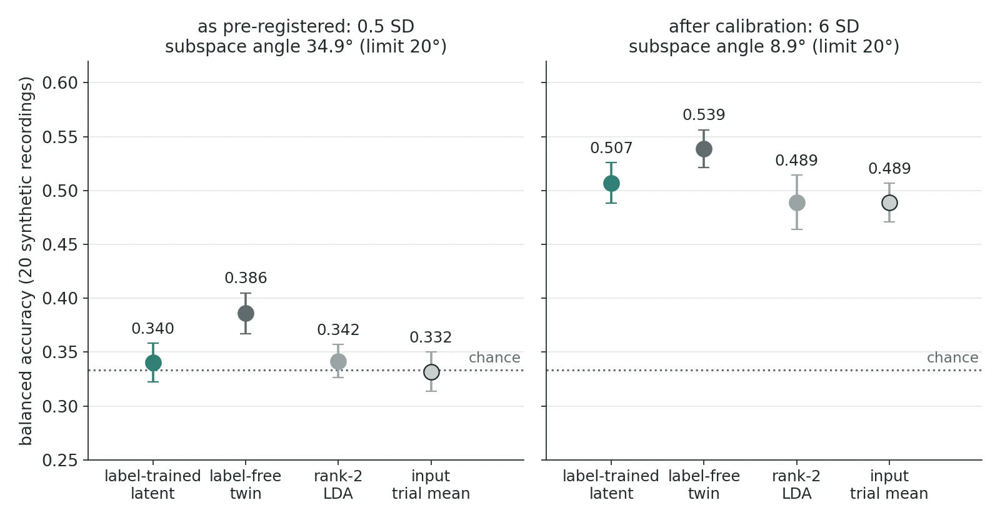

Entry
This is the last of four posts on one research loop with a hierarchical linear dynamical system (HLDS): does a hidden layer know more than its input, a redesign so the latents move, and per-condition likelihood classifiers. This one is the other direction of that last phase: put the label inside the model while it trains, and see whether the latent it learns is a better read.
The question, kept narrow
The data are multichannel time-series recordings from a collaborator's dataset, with three condition labels. During training the condition code is emitted from the top 2-d latent z, alongside the signal; at test time that output is dropped and z is filtered from the signal alone.
The test-time filter is fixed and linear, so the claim is narrow, and I wrote it down before anything ran: this is a contest between two ways of choosing a 2-d projection of the input, letting the label shape it through the model or taking a static rank-2 linear discriminant analysis (LDA) projection. The same model trained without the label (the label-free twin) is the second control. A win would not be evidence of nonlinear or state-dependent coding.
The previous input was standardized per trial, so every trial's mean was zero and a label channel had nothing to fit. This direction used a new log-envelope input: amplitude envelopes of three frequency bands, log-scaled, smoothed and decimated to about 250 samples per trial, 12 columns.
A gate that was uninformative as built
Before this direction saw any real labels, a synthetic gate simulated 20 synthetic recordings from one fitted model and planted a per-condition offset in z, pushing one condition up, one down and leaving the third alone. The model had to recover the planted direction to within 20° on average and read at least as well as LDA, up to 3 standard errors. The planted size, 0.5 standard deviations (SD) of z's stationary distribution along the planted direction, was fixed in the pre-registration.
It failed the angle check: 34.9° on average. Every other check passed. But the input's own trial mean sat at chance (0.332), and so did LDA (0.342) and the label-trained latent (0.340); only the label-free twin rose, to 0.386 (p 0.012 against chance, uncorrected). The simplest reader of the input could not see the plant at this trial length and trial count. Under the fitted model, z carries about 9% of the input's variance, and a label-free side check put the trial-mean separation between conditions 1 and 3 at a Mahalanobis distance of about 0.27 at the pre-registered size. An angle test cannot say whether the method recovers a subspace when the data do not show the plant, so the gate as built was uninformative rather than failed by the method.
Why the fix was a new section
The rules allowed corrections (errata) only before the first labelled run of the phase. The likelihood-classifier screen from the third post had already run on real labels, so the fix had to be a new dated section of the plan, reported as what it was: a gate change made after a gate failure. That is the move pre-registration exists to stop, so it carried these safeguards:
- I approved the route, and the section was frozen, hashed and committed before the calibration ran.
- The calibration rule was fixed in advance: a grid of 0.5, 1, 1.5, 2, 3, 4, 6 and 8 SD, picking the smallest amplitude where the input's own trial mean reaches balanced accuracy 0.50.
- It ran on a seed stream separate from the gate's, and it computed only that one input row. The label-trained latent, LDA and the twin were never fitted.
- One shot, enforced in code: if no amplitude reached 0.50, or the rerun failed any check, the direction would stop, with no further recalibration. The failed gate's ledger line stays on the record.
The calibration used its own seeds, so its 0.5 SD point (0.336) is not the gate's 0.332. At 4 SD the input reached 0.447, at 6 SD 0.501, so the rule chose 6 SD: twelve times the pre-registered plant before the simplest reader reached 0.50.
The rerun passed, and still said no
The rerun, on the gate's original seeds, passed every check. The recovered subspace sat 8.9° (standard error 0.7°) from the planted one, and the label-trained latent (0.507) sat 0.018 above LDA (0.489), a gap well inside the noise (paired p 0.45); the check only asked that it not fall more than 3 SE below. The input's trial mean reached only 0.489 here, below the 0.50 the calibration hit; the gate's seeds are not the calibration's.

The warning sign was in a reported-only row. The label-free twin read better than the label-trained latent, 0.539 against 0.507 (label-trained minus label-free −0.032, paired p 0.018). The label channel found the right subspace but did not help classification beyond what unsupervised fitting already gave, in a world built so the effect was exactly representable.
The real input gate
The last gate asked whether the real log-envelope input had enough trial-mean (first-moment) information to be worth a label channel at all. Its pre-named row was the input's trial mean read by logistic regression on the 14 explore recordings (13 more were held out for a confirm run), needing a mean gain in balanced accuracy over each recording's design null (trials relabelled with other recordings' real condition sequences) with a cohort t-test p < 0.05. It gave +0.047 with p 0.085, and the direction stopped. By the branch rule that means too little first-moment information for this design, which is a consequence of the rule rather than a demonstrated absence. Another row of the same run, not named by the gate, read the trial mean with a shrinkage-LDA probe and gave +0.065 with p 0.006 when I tested it afterwards. Because the gate row was named in advance, that row does not change the verdict. The labelled screen of the label-trained model never ran, and no confirm run was used.
What the whole loop found
Over three phases, no HLDS configuration showed a significant gain over its own input on its pre-registered rows, on the 14 explore recordings; the apparent exceptions, log-variance rows outside the pre-registered set, were matched by a same-size unsupervised projection of the input. What carried condition information was static second-order structure of the input: the log-variance of whitened input components (+0.081 over the null in one explore run) and a static per-condition Gaussian likelihood (+0.046, p 0.04). Neither needs the dynamics, and both are explore results, never confirmed. The 13 held-out confirm recordings were never touched.
Compute, honestly
The ledger says this phase used 9.39 h of its 28 h cap. Actual wall time was about 5.1 h. The gap is two direction-1 gate lines (the reproducibility and validity checks) that logged the serial sum of fold timings (14,457 s and 3,677 s) instead of wall time (about 1,826 s and 1,095 s), about 4.2 h between them. Both numbers also include 3,180 s of runs lost to a scratch-path bug in the gate script and then rerun; that time was really spent. Overcounting is safe for a cap and wrong for a report, so both numbers go here. The project page has the pipeline this loop ran on.